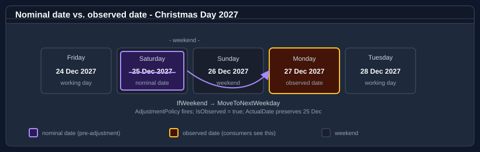

Observance adjustment rules
An adjustment policy shifts a resolved nominal date — the date the resolution strategy computed — into an observed date when a trigger condition fires. Most real-world public-holiday systems require adjustments: Christmas moving to a Monday when it falls on a Saturday, ANZAC Day moving to the next working day when it collides with a weekend, or a substitute Monday for any date that falls on a Sunday.
In the notable-date schema, an adjustment policy is reusable and named: it is declared once in the document's top-level <AdjustmentPolicies> element and referenced from a rule by id. There are no inline per-rule adjustment definitions — a rule always points at a policy with <Adjustment policyRef="…" />. This page covers nominal vs. observed dates, the reusable AdjustmentPolicy model, the full AdjustmentTrigger and AdjustmentAction catalogues, the <Emission> element and EmissionMode values, <Scope>, and how to plug in a custom trigger or action.
For the element-by-element reference, see NotableDateRule and adjustment-policy reference. For where adjustments sit in the overall resolution process, see The resolution pipeline.
Nominal date vs. observed date

Two terms appear throughout this page and the wider documentation:
- Nominal date — what the rule's resolution strategy computes, before any adjustment runs. For Christmas Day this is 25 December; for Easter Monday it is Easter Sunday + 1 day. The nominal date depends only on the rule and the year, and is carried on the resolved occurrence as
NotableDate.ActualDate. - Observed date — what the adjustment pipeline emits and what consumers actually see in
NotableDate.Date. When the nominal date is acceptable (e.g. Christmas falls on a Thursday) the observed date equals the nominal. When an adjustment fires (e.g. Christmas falls on a Saturday and a weekend-rollover policy relocates it) the observed date is the substitute.
Most occurrences have Date == ActualDate and IsObserved == false. When an adjustment fires, IsObserved is true and the occurrence records which policy moved it (AdjustmentPolicyId) and why (AdjustmentReason):
foreach (NotableDate date in service.Resolve(2027, "AU"))
{
if (date.IsObserved)
Console.WriteLine(
$"{date.DisplayName}: observed {date.Date:d MMM} (nominal {date.ActualDate:d MMM}) " +
$"via {date.AdjustmentPolicyId} — {date.AdjustmentReason}");
}
NotableDate.IsObserved is the flag (there is no WasAdjusted property — NotableDateFilter.WasAdjusted() is a filter factory you can compose into a query):
// Only the adjusted (observed) occurrences for the year.
IReadOnlyList<NotableDate> adjusted = service.Resolve(2027, "AU", NotableDateFilter.WasAdjusted());
Adjust in place vs. emit an additional observed date
Two jurisdictional styles dominate real-world public-holiday law, and the policy model supports both through the <Emission> element:
- Adjust in place — the nominal date is gone. The single occurrence moves to the observed date. There is one
NotableDatefor the year;Dateholds the observed date andActualDaterecords the nominal. This is<Emission mode="ObservedOnly" />and is typical of Australian / New Zealand public holidays. - Emit an additional observed date — keep the nominal and the substitute. The pipeline returns two
NotableDateinstances for the year: the nominal occurrence and the substitute. This is<Emission mode="ActualAndObserved" />and is typical of UK bank holidays, where the nominal date retains its religious / cultural significance and the substitute is a separate working-day closure. (The legacyObservedAsAdditionalmode is[Obsolete]and behaves identically — it is normalised toActualAndObservedat load time, so authorActualAndObservedin new documents.)
Use adjust-in-place when the authority treats the holiday as moved; emit-additional when the nominal date keeps its own weight. The data packs follow each jurisdiction's prevailing convention. The full list of emission modes is in Emission modes below.
The reusable adjustment-policy model
A policy is declared once and referenced by many rules. Three pieces make up a policy: a trigger (when it fires), an action (what it does), and an emission (what is emitted). An optional scope bounds it to particular territories, calendars, categories, rules, or years, and an optional <Parameters> block carries key/value pairs to a custom handler.
<NotableDateResource schemaVersion="1.0" resourceId="example" xmlns="urn:bodu:globalization:calendar">
<AdjustmentPolicies>
<!-- Weekend → next working day, emitted in place. -->
<AdjustmentPolicy id="weekend-to-next-working" priority="10"
description="Roll a weekend date forward to the next working day.">
<Trigger type="IfWeekend" />
<Action type="MoveToNextWorkingDay" />
<Emission mode="ObservedOnly" reason="Weekend substitute" nonWorking="true" />
</AdjustmentPolicy>
</AdjustmentPolicies>
<NotableDates>
<NotableDate id="australia-day" displayName="Australia Day" category="PublicHoliday">
<Rules>
<Rule id="default" nonWorking="true">
<Applicability>
<Territory code="AU" />
</Applicability>
<Strategy><Fixed month="January" day="26" /></Strategy>
<Adjustments>
<Adjustment policyRef="weekend-to-next-working" />
</Adjustments>
</Rule>
</Rules>
</NotableDate>
</NotableDates>
</NotableDateResource>
A rule's <Adjustments> element may list several <Adjustment policyRef="…" /> references; the referenced policies are evaluated in ascending priority order, and the first whose trigger fires applies. The runtime shape is AdjustmentPolicy, with Id, Priority, Scope, Trigger, Action, and Emission members; you author it in XML / JSON rather than constructing it directly.
Trigger catalogue
<Trigger type="…" /> selects one AdjustmentTrigger value. The companion attributes (month, day, weekOrdinal, handlerKey) and the child <Weekday value="…" /> elements supply the trigger's parameters.
AdjustmentTrigger |
Fires when | Companion <Trigger> attributes / children |
|---|---|---|
Always |
Unconditionally, for every occurrence of the rule. | (none) |
IfDayOfWeek |
The nominal date falls on one of the listed weekdays. | one or more <Weekday value="Saturday" /> children |
IfWeekend |
The nominal date falls on a weekend, per the configured working week. | (none) |
IfWeekday |
The nominal date falls on a working-week day. | (none) |
IfNonWorkingDay |
The nominal date is already a non-working day (weekend or another non-working occurrence). | (none) |
IfWorkingDay |
The nominal date is a working day. | (none) |
IfLeapYear |
The resolution year is a leap year. | (none) |
IfBeforeFixedDate |
The nominal date falls before the month/day boundary. |
month, day |
IfAfterFixedDate |
The nominal date falls after the month/day boundary. |
month, day |
IfNthOccurrenceInMonth |
The nominal date is the weekOrdinal-th occurrence of its weekday in the month. |
weekOrdinal |
Custom |
A registered IAdjustmentTriggerHandler returns true. |
handlerKey |
The weekend-related triggers (IfWeekend, IfWeekday, IfNonWorkingDay, IfWorkingDay) interpret "weekend" against the working week carried by the resource's ResolutionPolicy (default Monday–Friday). For a SundayToThursday working week — common in some Middle-Eastern territories — Friday and Saturday are the weekend.
<!-- Move only when the nominal date is a Saturday. -->
<AdjustmentPolicy id="saturday-only" priority="10">
<Trigger type="IfDayOfWeek">
<Weekday value="Saturday" />
</Trigger>
<Action type="MoveToPreviousWorkingDay" />
<Emission mode="ObservedOnly" />
</AdjustmentPolicy>
IfNonWorkingDayis order-sensitive. It is evaluated against the non-working dates already settled for the same year and territory, so an anchor rule (e.g. Christmas Day) must out-prioritise a dependent rule (e.g. Boxing Day) for the dependent'sIfNonWorkingDaytrigger to see the anchor's observed date. See the worked Boxing Day trace.
Action catalogue
<Action type="…" /> selects one AdjustmentAction value. Its companion attributes parameterise the move.
AdjustmentAction |
Effect | Companion <Action> attributes |
|---|---|---|
None |
Record that the trigger fired but leave the date unchanged. | (none) |
AddDays |
Shift by a signed number of calendar days (may land on a weekend or holiday). | days |
MoveToNextWeekday |
Advance to the next working-week day (ignores other non-working occurrences). | (none) |
MoveToPreviousWeekday |
Retreat to the previous working-week day. | (none) |
MoveToNextWorkingDay |
Advance past every consecutive non-working day to the next working day. | maxSearchDays, skipWeekends, skipNonWorkingDates |
MoveToPreviousWorkingDay |
Retreat past every consecutive non-working day to the previous working day. | maxSearchDays, skipWeekends, skipNonWorkingDates |
ReplaceWithRule |
Replace the date with another rule's resolved occurrence for the year. | notableDateRef, ruleRef |
Suppress |
Drop the occurrence entirely. | (none) |
Custom |
Delegate the move to a registered IAdjustmentHandler. | handlerKey |
MoveToNextWeekday / MoveToPreviousWeekday care only about the working week (weekends). MoveToNextWorkingDay / MoveToPreviousWorkingDay additionally skip other non-working occurrences — the right choice when a substitute must not land on another holiday — and accept maxSearchDays to cap how far they scan.
The companion attributes have defaults when omitted: skipWeekends defaults to true, skipNonWorkingDates to false, and days (for AddDays) to 0. maxSearchDays is unbounded when unset. So a bare <Action type="MoveToNextWorkingDay" /> rolls past weekends but not past other holidays — set skipNonWorkingDates="true" for the Boxing-Day-style "skip past the Christmas substitute too" behaviour.
<!-- Skip forward past weekends and any other non-working dates, searching at most 7 days. -->
<AdjustmentPolicy id="skip-to-working" priority="20">
<Trigger type="IfNonWorkingDay" />
<Action type="MoveToNextWorkingDay" maxSearchDays="7" skipWeekends="true" skipNonWorkingDates="true" />
<Emission mode="ObservedOnly" nonWorking="true" />
</AdjustmentPolicy>
<!-- "Same day as" another rule. -->
<AdjustmentPolicy id="track-eid" priority="10">
<Trigger type="Always" />
<Action type="ReplaceWithRule" notableDateRef="eid-al-fitr" ruleRef="default" />
<Emission mode="ObservedOnly" />
</AdjustmentPolicy>
Emission modes
<Emission mode="…" reason="…" nonWorking="…" /> decides what the policy emits once its action has produced an observed date. mode is a EmissionMode value; reason flows onto NotableDate.AdjustmentReason; nonWorking sets the observed occurrence's IsNonWorkingDay flag.
EmissionMode |
What is emitted |
|---|---|
ActualOnly |
Only the nominal date; the computed substitute is discarded. |
ObservedOnly (adjust-in-place) |
Only the observed date; the nominal date is not emitted separately. |
ActualAndObserved (keep-both) |
Both the nominal and the observed dates, as two occurrences. |
ObservedAsAdditional |
[Obsolete] — behaves identically to ActualAndObserved and is normalised to it at load time. Prefer ActualAndObserved. |
Suppress |
Nothing — the occurrence is dropped for the year. |
ObservedOnly is the AU/NZ "the holiday moved" style; ActualAndObserved is the UK "keep the nominal, add a bank-holiday substitute" style. Which of the emitted occurrences governs inclusion in a range query is a separate, resource-level decision — the ObservedDateRangePolicy — covered in Rule identity, priority, and observed-date resolution.
<!-- UK bank-holiday style: keep 25 December, add a working-day substitute when it is a weekend. -->
<AdjustmentPolicy id="uk-substitute" priority="10">
<Trigger type="IfWeekend" />
<Action type="MoveToNextWorkingDay" />
<Emission mode="ActualAndObserved" reason="Substitute bank holiday" nonWorking="true" />
</AdjustmentPolicy>
Scope — bounding a policy
An <Scope> element restricts a policy to particular territories, calendars, categories, rules, or years. A policy with no <Scope> applies wherever a rule references it (the runtime default is AdjustmentScope.Global).
<AdjustmentPolicy id="nt-weekend-roll" priority="10">
<Scope fromYear="2018">
<Territory code="AU-NT" />
<Category value="PublicHoliday" />
</Scope>
<Trigger type="IfWeekend" />
<Action type="MoveToNextWeekday" />
<Emission mode="ObservedOnly" />
</AdjustmentPolicy>
<Scope> children mirror rule applicability: <Territory code="…" /> (with the usual containment — a scope of AU matches AU-NSW queries), <Calendar name="…" />, <Category value="…" />, <NotableDate ref="…" />, <Rule notableDateRef="…" ruleRef="…" />, and <OnlyYear value="…" /> / <ExceptYear value="…" />, plus the fromYear / toYear attributes on <Scope> itself. A policy is considered only when its scope matches the resolution context; otherwise it is skipped before its trigger is evaluated.
Chaining several policies on one rule
A rule references policies by id, and they are evaluated in ascending priority; the first whose trigger fires wins and the rest are skipped. Because IfWeekend matches both Saturday and Sunday, distinct per-day behaviour needs distinct policies with distinct triggers:
<AdjustmentPolicies>
<!-- US "observed" style: Saturday → preceding Friday, Sunday → following Monday. -->
<AdjustmentPolicy id="sat-to-fri" priority="10">
<Trigger type="IfDayOfWeek"><Weekday value="Saturday" /></Trigger>
<Action type="MoveToPreviousWeekday" />
<Emission mode="ObservedOnly" />
</AdjustmentPolicy>
<AdjustmentPolicy id="sun-to-mon" priority="20">
<Trigger type="IfDayOfWeek"><Weekday value="Sunday" /></Trigger>
<Action type="MoveToNextWeekday" />
<Emission mode="ObservedOnly" />
</AdjustmentPolicy>
</AdjustmentPolicies>
<!-- … referenced together: -->
<Adjustments>
<Adjustment policyRef="sat-to-fri" />
<Adjustment policyRef="sun-to-mon" />
</Adjustments>
Worked pattern — Christmas and Boxing Day substitution
When Christmas Day moves to Monday, Boxing Day (26 December) must skip to Tuesday rather than also landing on Monday. Give Christmas a weekend-roll policy at a higher priority (lower number) than Boxing Day's IfNonWorkingDay policy so the relocated Christmas is already settled when Boxing Day is evaluated:
<AdjustmentPolicies>
<AdjustmentPolicy id="weekend-to-next-weekday" priority="10">
<Trigger type="IfWeekend" />
<Action type="MoveToNextWeekday" />
<Emission mode="ObservedOnly" nonWorking="true" />
</AdjustmentPolicy>
<AdjustmentPolicy id="skip-nonworking" priority="20">
<Trigger type="IfNonWorkingDay" />
<Action type="MoveToNextWorkingDay" maxSearchDays="7" />
<Emission mode="ObservedOnly" nonWorking="true" />
</AdjustmentPolicy>
</AdjustmentPolicies>
For 2027 (Christmas on Saturday, Boxing Day on Sunday), resolving service.Resolve(2027, "AU"):
| Nominal | Policy | Observed |
|---|---|---|
| Sat 25 Dec — Christmas Day | weekend-to-next-weekday (IfWeekend → MoveToNextWeekday) |
Mon 27 Dec |
| Sun 26 Dec — Boxing Day | skip-nonworking (IfNonWorkingDay → MoveToNextWorkingDay): Sun → non-working, Mon 27 → non-working (Christmas substitute), Tue 28 → working |
Tue 28 Dec |
Both occurrences come back with IsObserved == true, their ActualDate carrying the original 25 / 26 December.
Custom triggers and actions
When the built-in trigger and action values cannot express your logic, supply a custom handler and reference it from the policy by handlerKey. Triggers and actions have separate contracts and separate registries.
Custom trigger — IAdjustmentTriggerHandler
A custom trigger implements IAdjustmentTriggerHandler, whose single method bool ShouldAdjust(AdjustmentTriggerContext context) returns whether the policy should fire. Register it under a key in an AdjustmentTriggerHandlerRegistry (chainable Register(key, handler); the registry implements Contains / TryGet). The AdjustmentTriggerContext exposes BaseDate (the nominal date under evaluation), Territory, the Policy being applied, the ResolutionContext, and the policy's handler Parameters:
using Bodu.Globalization.Calendar;
public sealed class FullMoonTrigger : IAdjustmentTriggerHandler
{
public bool ShouldAdjust(AdjustmentTriggerContext context) =>
IsFullMoon(context.BaseDate); // your astronomical test over the nominal date
private static bool IsFullMoon(DateOnly date) => /* … */ false;
}
var triggerHandlers = new AdjustmentTriggerHandlerRegistry()
.Register("full-moon", new FullMoonTrigger());
<AdjustmentPolicy id="on-full-moon" priority="10">
<Trigger type="Custom" handlerKey="full-moon" />
<Action type="MoveToNextWorkingDay" />
<Emission mode="ObservedOnly" />
</AdjustmentPolicy>
Custom action — IAdjustmentHandler
A custom action implements IAdjustmentHandler, whose method DateOnly? Adjust(AdjustmentHandlerContext context) returns the observed date (or null to leave the date unchanged). Register it in an AdjustmentHandlerRegistry. The AdjustmentHandlerContext carries the same BaseDate, Territory, Policy, and ResolutionContext members as the trigger context, and parameters declared on the policy's <Parameters> block are available as Parameters:
using Bodu.Globalization.Calendar;
public sealed class EarlyCloseHandler : IAdjustmentHandler
{
public DateOnly? Adjust(AdjustmentHandlerContext context) =>
context.BaseDate.AddDays(-1); // move to the prior day, for example
}
var handlers = new AdjustmentHandlerRegistry()
.Register("early-close", new EarlyCloseHandler());
<AdjustmentPolicy id="corporate-early-close" priority="10">
<Trigger type="Custom" handlerKey="full-moon" />
<Action type="Custom" handlerKey="early-close" />
<Emission mode="ObservedOnly" reason="Corporate early close" />
<Parameters>
<Param key="closureType" value="earlyClose" />
</Parameters>
</AdjustmentPolicy>
Wiring the registries into the service
Both registries are carried on a NotableDateServiceOptions object passed to the second NotableDateService constructor. The options object exposes five init-only collaborator slots — Algorithms, CollisionResolver, Handlers (action), TriggerHandlers, and Providers — each independently optional:
using Bodu.Globalization.Calendar;
var service = new NotableDateService(resource, new NotableDateServiceOptions
{
Handlers = handlers, // IAdjustmentHandlerRegistry — custom actions
TriggerHandlers = triggerHandlers, // IAdjustmentTriggerHandlerRegistry — custom triggers
});
The handlerKey on <Trigger> is looked up in the trigger registry; the handlerKey on <Action> is looked up in the action registry. A policy may use a custom trigger with a built-in action, a built-in trigger with a custom action, or both.
Where to go next
- NotableDateRule and adjustment-policy reference — the element-by-element schema for rules and policies.
- The resolution pipeline — how adjustment policies are evaluated within the overall resolution flow.
- Rule identity, priority, and observed-date resolution — emission modes and observed-date range inclusion in depth.
- Holiday patterns and examples — complete worked examples for UK, US, AU, Easter, and lunar holidays.
- Building and extending the service — wiring the handler and trigger registries into a
NotableDateService. - Globalization & Calendars guides — every guide in this topic: the runtime, companions, data packs, and the notable-date catalogue.